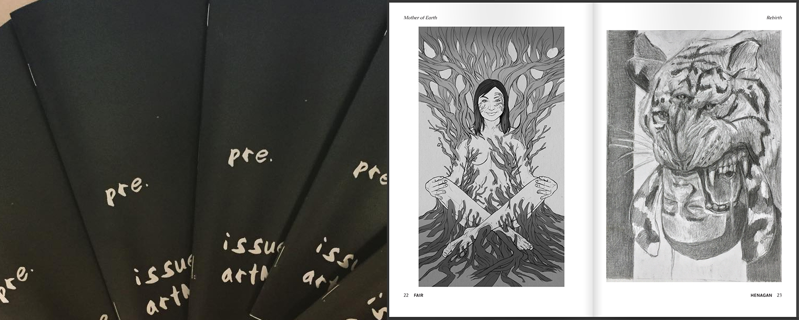

artMEAT
Mission
artMEAT is an inititive sponsored by the Austin Creative Aliance to trengthen the foundation of communities by fostering the collaboration of siloed individual artists, art enthusiasts, the creatively inclined, persons unexposed to the arts, and those with the slightest investment in creative exploits. artMEAT aims to be a collective of interdisciplinary voices, creative initiatives, and diverse individuals. artMEAT facilitates the individual's discovery and exploration of the creative self and the artistic tribe.
Our main goal is to break down barriers surrounding the siloed artistic communities around Austin and the outside world. Many painters have never worked with actors. Many photographers have never worked with a poet. We think the challenge of seeing your work through a different medium can strengthen creatives and get them to see things from a different perspective. There are those in Austin who love creating in their own little niche but have never attended a creative event outside of their discipline. We want to celebrate Austin's artistic and cultural community and inspire people to work with others, attend different kinds of artistic events, and learn about new mediums. We believe this will encourage an active and holistic cultural community.
Visit the site here!
artGLOSS
As Executive Curator of thisisartMEAT, my focus is on producing, distributing, and promoting our zine. artGLOSS zine is a publication of cohesive artistic work centered around a chosen theme. We are most interested in non-traditional art forms and multiple mediums. We strive to connect art makers from one genre with those from another. Our hope is that the focus on interdisciplinary work will expand the exclusivity of the field.
My Contributions
- Support the vision, values, and goals of our project by offering expertise in my area of knowledge (design, brand, marketing)
- Branding, ideation, and execution of all brand materials and visual guidelines
- Spearhead production and distribution of the artGLOSS zine
- Work with the team, our members, and any outside participants to ensure a wonderful experience and cross-collaboration in the community.
Contributors
artGANG: Delante G. Keys, Kayleigh Axtell, Kyle Danielson
Fiscally sponsored by Austin Creative Alliance